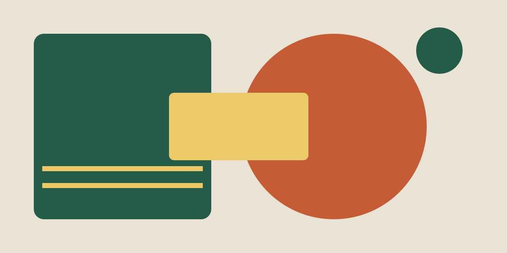

12–13 giugno · Torino · Festival immaginario
Il design lascia un segnale.
Due giorni per incontrare persone, esplorare materiali e guardare la città con occhi nuovi.
Segnale è un festival immaginario dedicato al design e alla comunicazione visiva. Incontri, laboratori e mostre mettono in dialogo idee, oggetti e spazi. Non servono conoscenze specialistiche: basta la curiosità.
Esplora il programmaIdee da incontrare
Sei appuntamenti, tre luoghi.
Il venerdì esploriamo lettere, materiali e immagini. Il sabato lavoriamo su oggetti, mappe e progetti condivisi. Nel Programma trovi orari, sedi e descrizioni.

I luoghi
- Officina Nord: incontri e progetti condivisi.
- Spazio Forma: laboratori e sperimentazioni.
- Cortile Comune: mostre e percorsi.
Festival, sedi ed eventi sono inventati per questa esercitazione. Non rappresentano un evento reale.